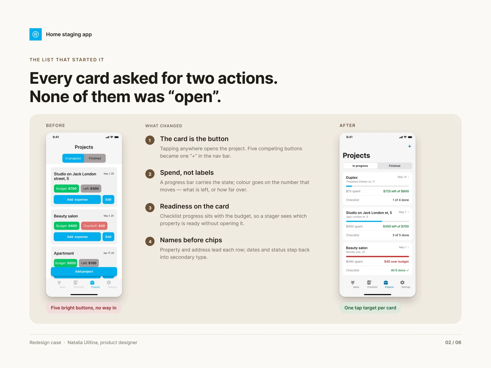
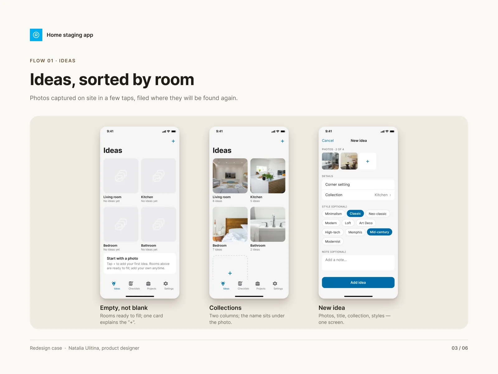
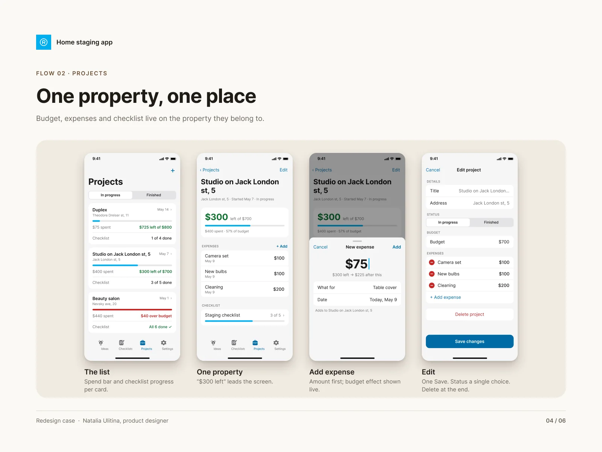
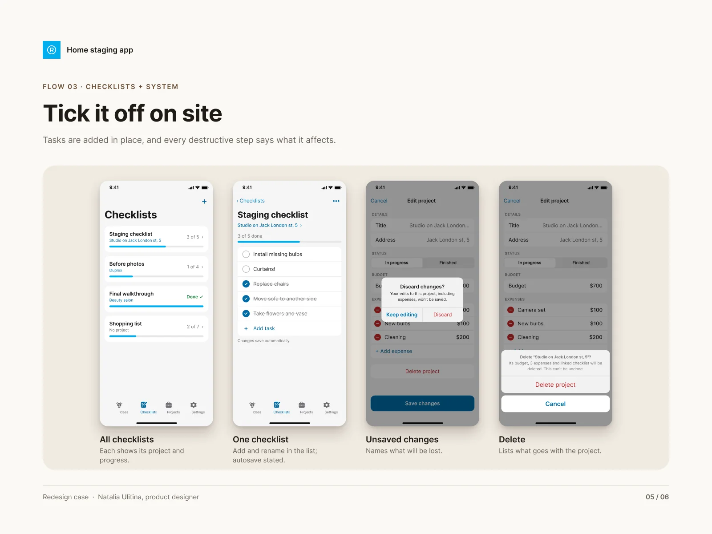
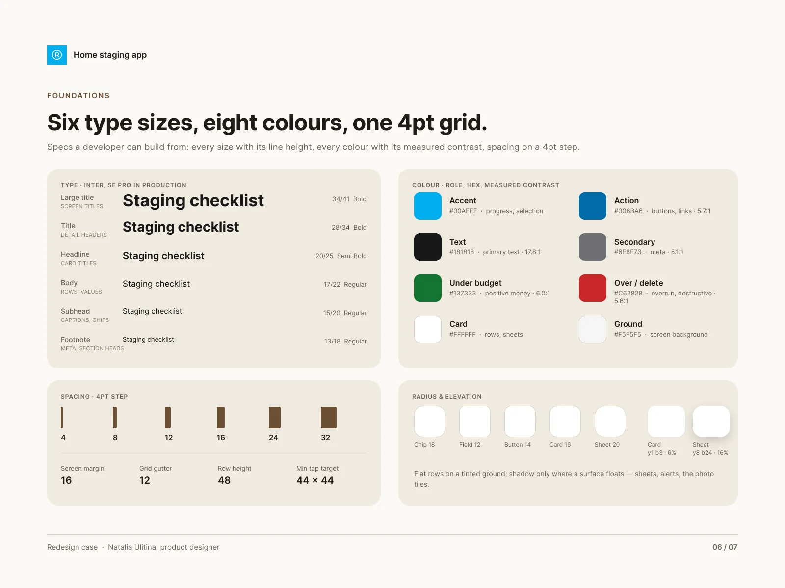
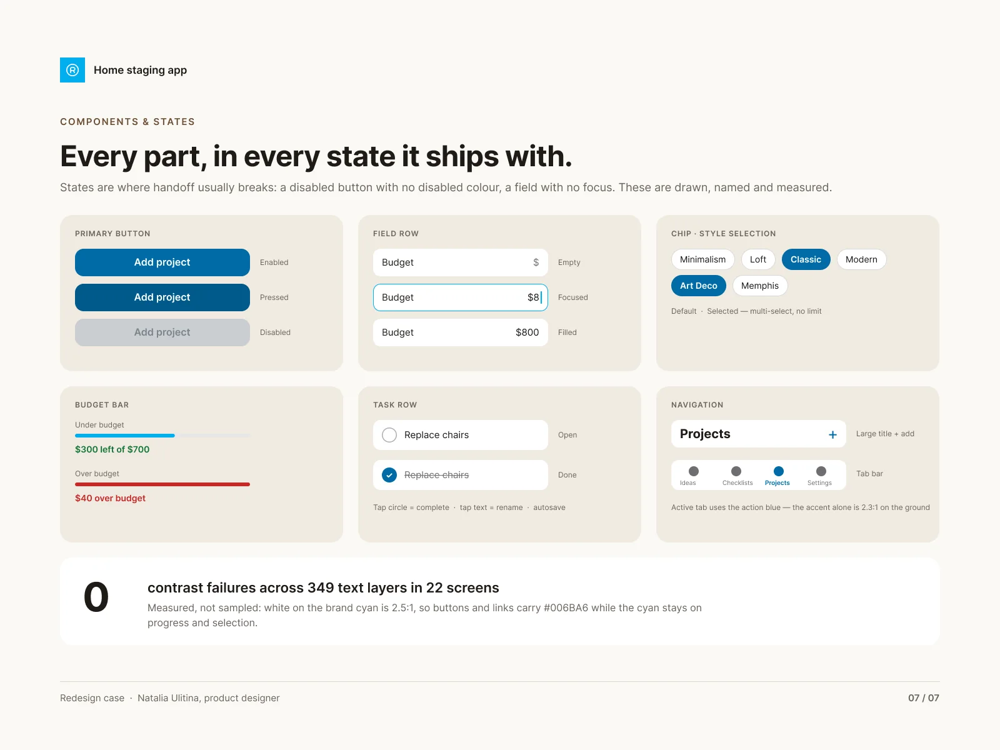

09 · iOS app · Redesign
Three tools that never talked to each other.
An app for home stagers: ideas sorted by room, a readiness checklist and a budget for every property. In the first version they were three separate tools. I rebuilt it so one property holds all three.
The case in 30 seconds
- The problem
- Ideas, checklists and budgets lived in separate tools. Every project card offered five competing buttons but no way to open it, and white text sat on the brand cyan at 2.5:1.
- What I did
- Rebuilt 22 screens across five flows so each property holds its ideas, budget and checklist. The whole card became the tap target, spend and readiness moved onto the card, and everything is built from one type scale, eight colours and six parts.
- The result
- Adding a task went from five steps to one, and there are zero contrast failures across all 349 text layers: the brand cyan stayed, the text on it changed.
01 — The list that started it
Every card asked for two actions, and none of them was “open”. Now the card is the button, the spend is on the card, and readiness sits next to the budget so a stager sees which property is ready without opening it.

02 — Ideas, sorted by room
Photos captured on site in a few taps, filed where they will be found again. An empty collection explains the “+” instead of showing a blank grid.

03 — One property, one place
Budget, expenses and checklist live on the property they belong to. “$300 left” leads the screen, and adding an expense shows its effect on the budget as you type.

04 — Tick it off on site
Tasks are added in place, changes save automatically, and every destructive step says exactly what it affects before it happens.

05 — Foundations
Specs a developer can build from: every size with its line height, every colour with its measured contrast, spacing on a 4pt step and a 44 × 44 minimum tap target.

06 — Every part, in every state
States are where handoff usually breaks: a disabled button with no disabled colour, a field with no focus. Here they are drawn, named and measured.

In short
One property, one screen, everything a stager needs on site.
Fewer buttons, more answers: the card says how much is left and how ready it is before anyone taps it.